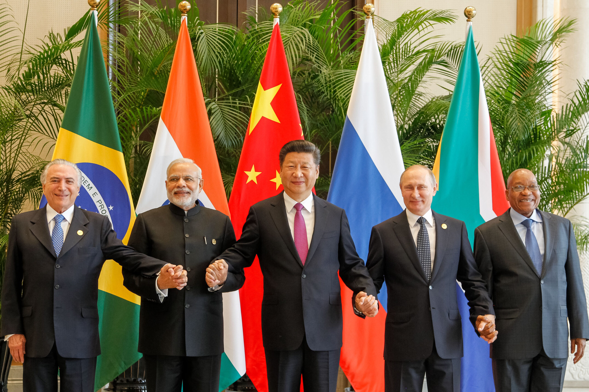

Presentation
L’origine du groupe BRICS remonte à 2006, lorsque les ministres des Affaires étrangères du Brésil, de la Russie, de l’Inde et de la Chine se sont réunis à New York en marge de l’Assemblée générale de l’ONU.
Le premier sommet officiel des chefs d’État a eu lieu en 2009 à Ekaterinbourg (Russie), marquant la naissance officielle du groupe BRIC. En 2010, l’Afrique du Sud rejoint le groupe, qui devient alors le BRICS.

Le groupe BRICS+ s’est ensuite élargi en 2023 à plusieurs pays émergents, renforçant sa place comme acteur majeur de la coopération économique internationale.
Avis des internautes
👍 Avis positifs
| Nom | Commentaire |
|---|---|
| Ali | Le BRICS représente une alternative prometteuse à la domination économique occidentale. |
| Maria | Une alliance qui renforce la voix des pays du Sud sur la scène mondiale. |
👎 Avis négatifs
| Nom | Commentaire |
|---|---|
| John | Les intérêts des pays membres sont parfois trop divergents pour former un bloc solide. |
| Sara | Le groupe reste trop dépendant de la Chine et de la Russie. |